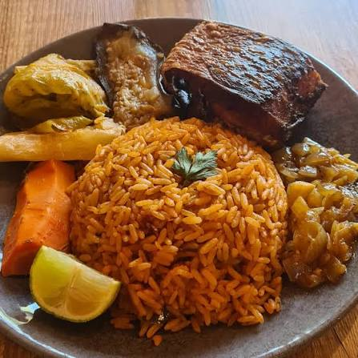
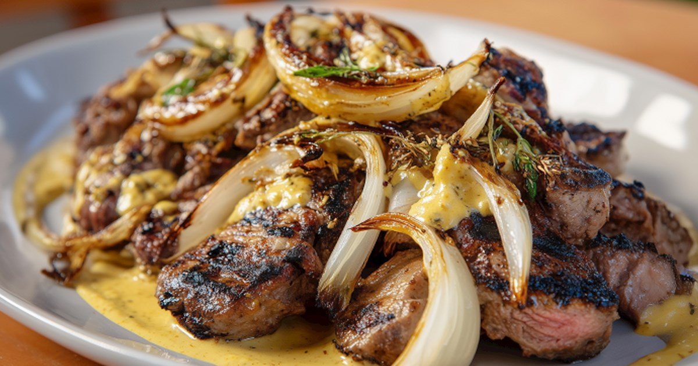

Peixe recheado com ervas, cozido com arroz em molho de tomate, mandioca, cenoura, repolho e berinjela. Nasceu em Saint-Louis e é servido em uma grande travessa para toda a família comer junta.
Frango ou peixe marinado em limão e muita cebola, grelhado e depois cozido no próprio molho. Vem com arroz branco.
Ensopado cremoso de carne com pasta de amendoim, tomate e batata-doce. Comida de conforto.

Carne de carneiro grelhada na brasa, cortada na hora e servida com cebola e mostarda. Comida de rua clássica de Dakar.
Pastéis fritos recheados com peixe temperado. Entrada ou lanche, sempre com molho picante.
Suco gelado de flor de hibisco, vermelho e levemente azedo.
Forte e picante, adoçado com açúcar e às vezes com limão.
Café com pimenta-da-guiné, criado na cidade santa de Touba.
Sobremesa de cuscuz de painço com iogurte, leite e baunilha.